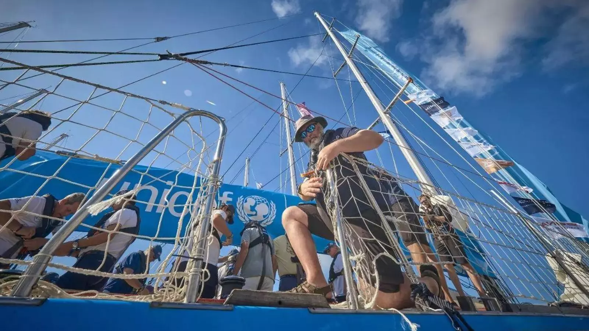

Puerto Sherry volverá a ser puerto anfitrión en la etapa inaugural de la Clipper 2025-26 Round the World Yacht Race
Puerto Sherry se consolida como destino clave para la navegación oceánica internacional al ser nuevamente seleccionado como puerto anfitrión de la prestigiosa Clipper Race, que traerá más de 200 regatistas internacionales en septiembre...
Leer más